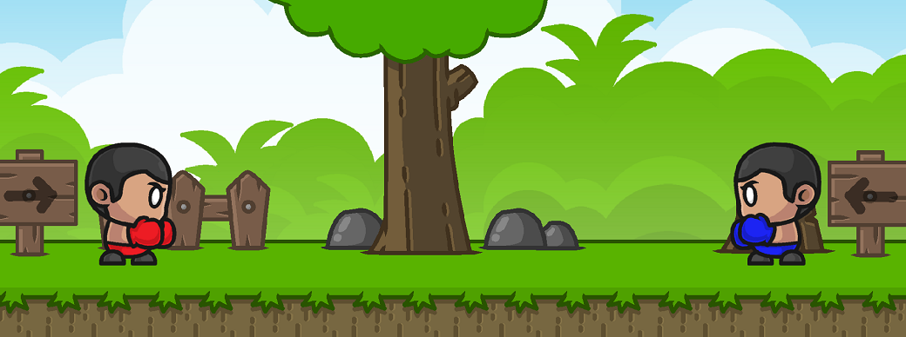

Cartoon Boxing
About
Cartoon Boxing was built in a couple of days using free art I found on OpenGameArt.org here. Thanks Segel!
The project started as a Street Fighter 2 clone but I couldn't find a proper sprite sheet and I didn't want to try to fix all of the sprite atlases I was able to find using Google, so I went with what I could find with low effort.
A Quick Experiment With Unity's New Input System
The previous two projects I built in Unity used the old input system. I wanted some experience with Unity's new input system, and I really wanted to know how to implement local multiplayer so I chose to build a small game that would focus on user input and as a bonus learn how to add haptic feedback (controller rumble).
private void OnPlayerJoined(PlayerInput playerInput)
{
if (PlayerInputManager.instance.playerPrefab == redBoxerPrefab)
{
onRedPlayerJoin.Raise();
}
else if (PlayerInputManager.instance.playerPrefab == blueBoxerPrefab)
{
onBluePlayerJoin.Raise();
}
PlayerInputManager.instance.playerPrefab = blueBoxerPrefab;
}